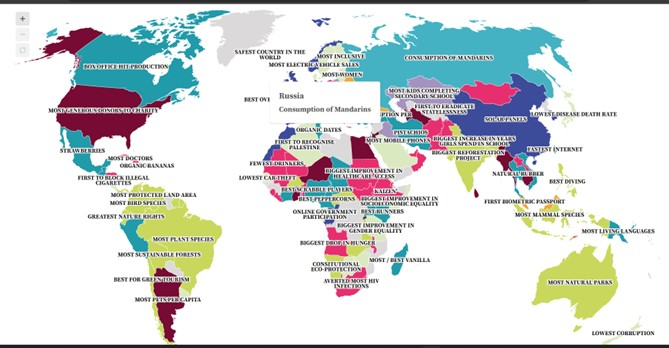

In the terms of data art, I was not sure how to go about creating something that would accurately and positively tick all categories that cover my website. My website is firstly technologically based so it heavily depends on the use of things like computers and such to display its themes. I want my data art to be something similar so that it would fit well within the theme.
What I came up with was inspired by other pieces of data art that showed the countries of the world and gave information about them on a certain topic. I was thinking of doing something similar and showing the top ten most technologically advanced or driven countries in the world. I would show the whole map in grey and then those specific countries would be in a different colour and would highlight and expand when they are hovered on. I would do this in Java and it would use a similar method as the one on this page: Because Every Country Is the Most Beautiful At Something — Information is Beautiful (Beautiful, n.d.). I think that it would suit my theme perfectly and it is an interesting piece of art that not only talks about an interesting topic that being technology but it would also fit in with the things that my website deals with and the technology theme will shine through well and it would educate people about the most developed countries in the world regarding technology.
This engages the data set by not only showing a cool image of the world but my highlighting these countries that are further developed and it will give more information regarding these countries’ developments. I would like it to be like other graphs where once the mouse hovers over it a small window will appear that will show information that those countries hold.
I think that it will 0bring about a new way of thinking as now users will be able to see the top tech countries in the world and maybe they could not only take interest in why these countries are at the top but it will make them more interested in the ways that these countries achieved this and so in a technological sense it would open up the topic is a nice way that not only draws the attention of the viewers but also leaves out enough information to cause viewers to look into the topic and expand on the ideas that these countries bring forth with their existence. I also would imagine that many of the viewers would not expect the countries that are on this list, and I think that it’s interesting to see the data set and how it will differ from the presumptions many people have already on whose countries are most advanced.
I think that ties in well with the reading Artistic Data Visualization: Beyond Visual Analytics (Martin Wattenberg, n.d.) it relates to this reading in terms of the use of data visuals to expand a topic I also think that the way I’m doing this fits in with the forceful point of view because the certain countries o the map will be in colour thereby forcefully drawing attention to it and so forcefully making the user curious to scroll and hover on these countries to see the data they contain.
I think that by doing this type of art I am using data as my canvas and paintbrush and like all art, I think it has meaning as it explores the topic of technology in terms of its beauty and advancement. I think that many people see technology as this cold steel-driven thing rather than the good and interests that it has developed into through us. I think that through the art and the use of a topic I can give the data art meanings and bring out understanding and interest from the viewers.
In terms of actual creation, I have looked and found a few videos and websites that give me information on how to build this project and how to develop it. Namely, the video tutorials include: • Interactive World Map Tutorial HTML JavaScript PHP Fireworks Continent Country - YouTube • Clickable Interactive map tutorial - building & designing for BEGINNERS - HTML, CSS, JS - YouTube • Make a Clickable SVG Map using HTML & CSS - YouTube They call it an interactive SVG map and it uses HTML and CSS to construct it it also looks something like this
As my mouse hovers over Russia a window opens that shows and explains things about that country, I plan to follow a similar type of coding process as well as an implementation process. I have done a little more research in terms of data-driven art, but I think that this suits me best in terms of themes and interests and I would like to learn and explore this piece of art.
I was also thinking of using a data set to generate the art on its own but I’m not sure how to go about that and I think that the SVG map is more in line with my theme.